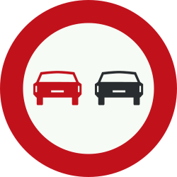
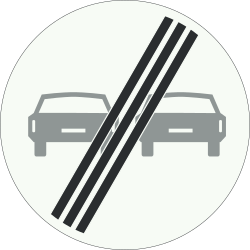
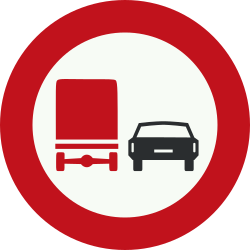
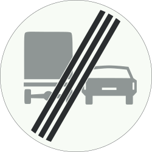
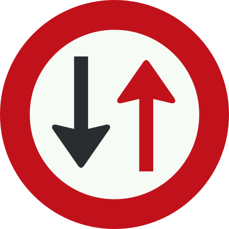
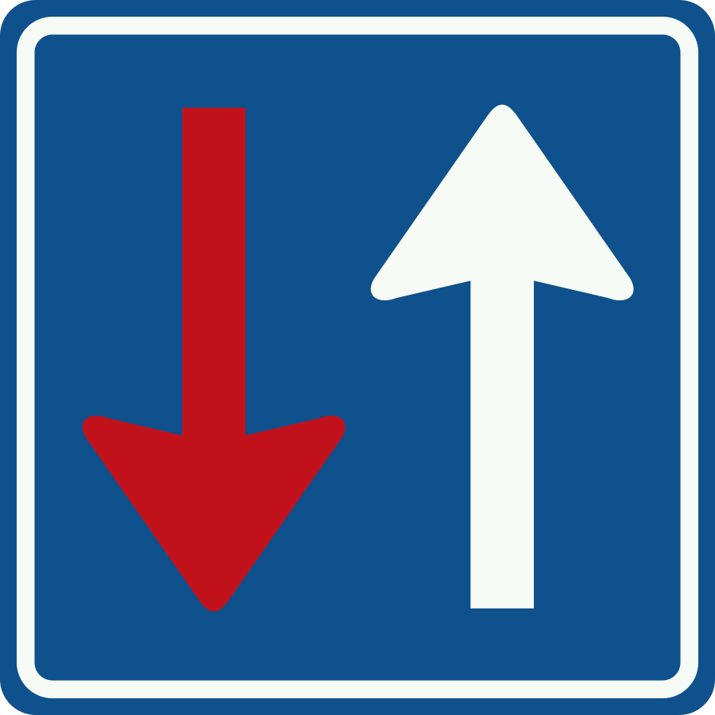
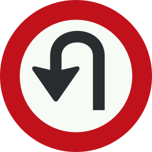
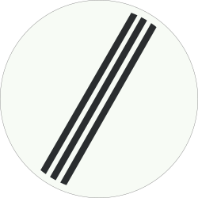
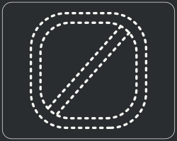
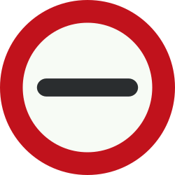

Verbod voor motorvoertuigen om elkaar in te halen
Op dit wegdeel mogen motorvoertuigen elkaar niet inhalen.
Dit geldt voor alle motorvoertuigen, dus ook voor motorfietsen.

Op dit wegdeel mogen motorvoertuigen elkaar niet inhalen.

Hier eindigt het verbod: motorvoertuigen mogen weer inhalen.

Vrachtwagens mogen hier geen andere motorvoertuigen inhalen.

Het verbod stopt hier: vrachtauto’s mogen weer motorvoertuigen inhalen.

Bij een wegversmalling of obstakel moet je tegenliggers (ook voetgangers) eerst voor laten gaan.

Hier geldt het omgekeerde: bestuurders uit de andere richting moeten jou voor laten gaan bij een wegversmalling of obstakel.

Op deze weg is het verboden om te keren.

Hier eindigen alle tijdelijke verboden die eerder door borden zijn aangegeven.

Dit bord betekent dat je moet stoppen.

Landbouw- en bosbouwtrekkers, voertuigen met lage snelheid en mobiele machines zijn verplicht de passeerstrook te gebruiken, zodat ander verkeer hen kan inhalen.
